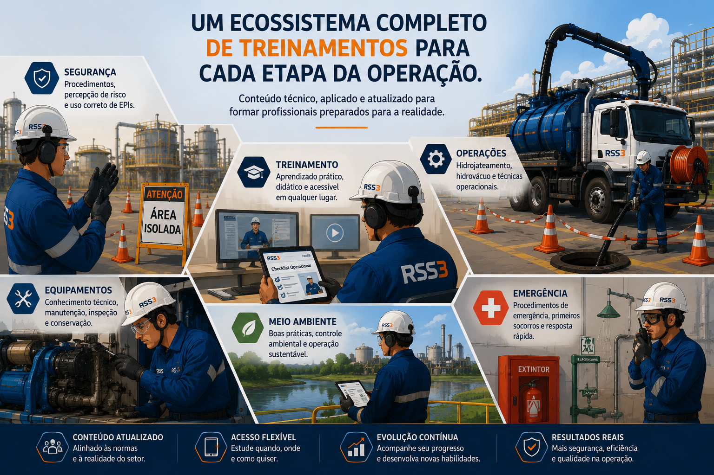
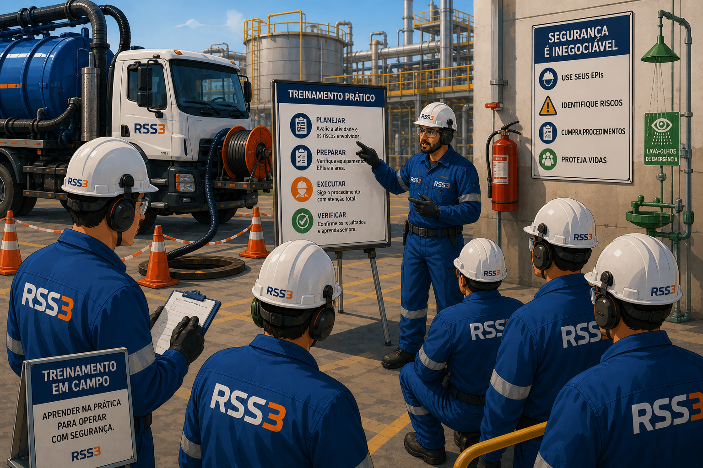
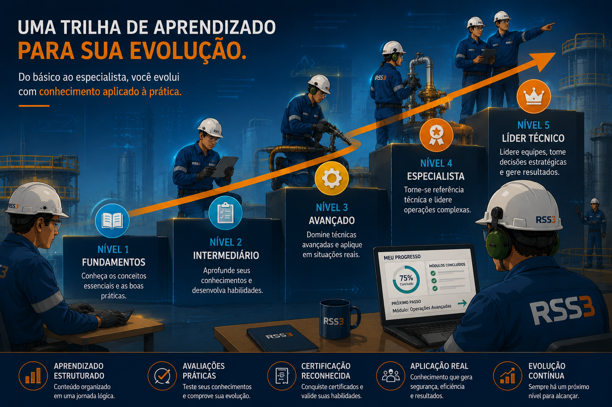
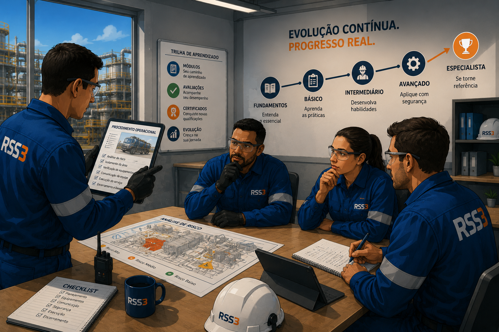
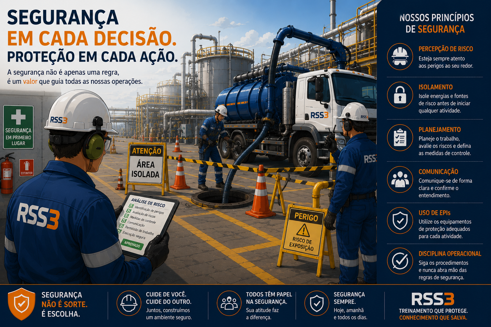

Um ecossistema completo de treinamentos.
A plataforma RSS3 foi criada para centralizar conteúdos técnicos, operacionais e de segurança em um ambiente moderno, acessível e organizado.
Mais do que apresentar informações, os treinamentos foram pensados para desenvolver entendimento real sobre procedimentos, riscos e aplicações práticas.
Segurança
Procedimentos, EPIs, percepção de risco e prevenção.
Operações
Técnicas operacionais, hidrojato, hidrovácuo e execução.
Equipamentos
Funcionamento, inspeção, conservação e análise técnica.
Emergências
Resposta rápida, primeiros socorros e procedimentos.

Aprendizado voltado para a prática.
Os treinamentos foram estruturados para conectar teoria e aplicação operacional.
O objetivo não é apenas concluir um curso, mas compreender o motivo de cada procedimento, identificar riscos e executar atividades com mais segurança e eficiência.
- Explicações claras e objetivas.
- Aplicações reais do ambiente industrial.
- Conteúdo acessível para diferentes níveis.
- Desenvolvimento de percepção operacional.

Conhecimento aplicado gera decisões melhores.
Segurança operacional começa antes da execução. Começa na compreensão.
A plataforma incentiva análise, interpretação operacional, comunicação e entendimento dos processos antes das atividades.
- Entendimento antes da execução.
- Comunicação clara entre equipes.
- Interpretação de procedimentos.
- Desenvolvimento técnico contínuo.

Uma plataforma construída para evoluir.
Os treinamentos estão organizados em níveis para acompanhar o crescimento técnico e operacional de cada colaborador.
Conforme a plataforma evoluir, novos módulos, especializações, trilhas e sistemas de progresso serão incorporados.
Básico
Introdução aos fundamentos e boas práticas.
Intermediário
Interpretação operacional e desenvolvimento técnico.
Avançado
Aplicação crítica, liderança e tomada de decisão.

Segurança é parte da cultura operacional.
A prevenção de riscos depende de conhecimento, disciplina operacional e percepção constante do ambiente de trabalho.
Por isso, os conteúdos reforçam comportamento seguro, planejamento, isolamento, comunicação e utilização correta de EPIs.
- Percepção de risco.
- Planejamento operacional.
- Uso correto de EPIs.
- Segurança antes da execução.
+20
Treinamentos planejados
100%
Gratuito
+8
Áreas técnicas futuras
24/7
Acesso contínuo aos conteúdos
Segurança começa antes da operação. Começa na compreensão.
A plataforma RSS3 Treinamentos foi criada para fortalecer conhecimento técnico, comportamento seguro e desenvolvimento operacional através de conteúdos claros, aplicáveis e conectados com a realidade das operações industriais.